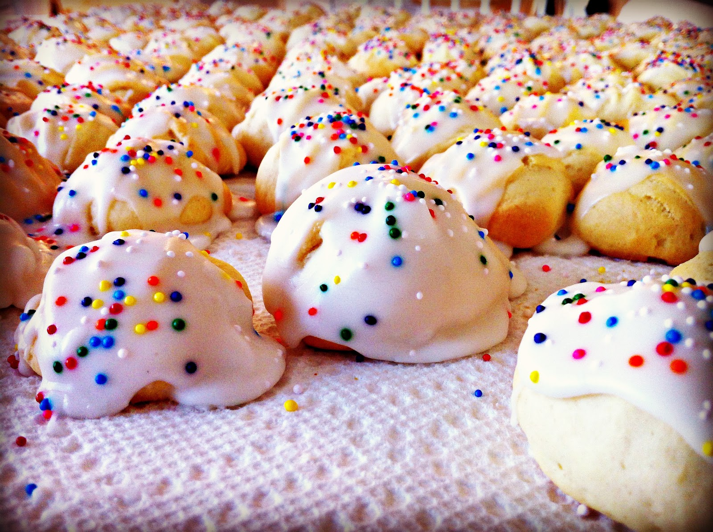

Sicilian Orange Drop Cookies

My Nona came over on the boat and would make "S" cookies often, they were my favorite! During Easter she would make them into a basket or rabbit and put a hardboiled egg in the center. I unfortunatly don't have her recipe so have been searching for something similar and came across Sicilian Orange Drop Cookies.
Ingredients
- 1 cup of butter or laud
- 1 1/2 of sugar
- 2 eggs
- 4 cups of flour
- 1/4 teaspoon of salt
- 1 teaspoon of baking soda
- 1 teaspoon of baking powder
- 1/4 cup of orange juice
- 2 teaspoons of grated orange rind
- 1 cup of buttermilk or 1 tablespoons of white vinegar and enough milk to make one cup.
Steps
- Cream the butter and sugar. Add the eggs and mix well. Add the orange juice and rind and mix some more.
- Combine the dry ingredients in a separate bowl. Add them to the creamed mixture alternating with the buttermilk until just blended together.
- Drop on a greased baking sheet. Bake at 350 degrees for 10 - 15 minuets.
Optional icing
- 4 tablespoons of melted butter.
- The juice and rind of one orange.
- Enough confectioners sugar to stiffen.
- Ice the cookies after they are cool.